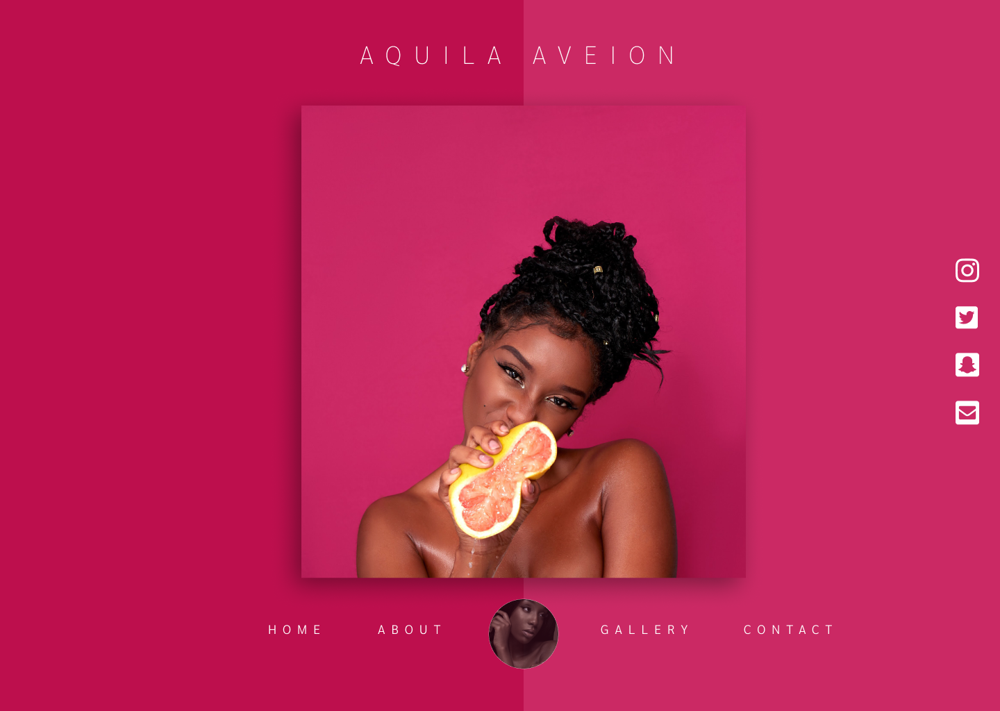

*** Frontend Engineer (With Vue) Internship ***
There's an opening for 3 Frontend Engineers (Vue). The internship duration is 3 months (Flexible work hours).
After the 3 months, at least 2 developers will be selected for a full time offer.
** What we are looking for **
We don't care much about CVs and long stories about your educational background. The things we do GREATLY care about are:
1. Your soft skills. (Responsible communication and responsiveness)
2. You know when to admit you don't know a lot or anything about something
3. You are quite good at googling stuff and figuring **** out
4. Your word is your bond. When you say something will be ready by 11AM, then the thing is ready by 11AM. Not a microsecond after.
5. You at the very least, know the difference between var, let and const.
6. Be able to parse requirements, confident enough to ask questions about any and everything not understood.
** What are we offering for the internship **
Net pay (monthly): NGN 80,0000 (Eighty thousand naira only)
Internet allowance (monthly): NGN 20,0000 (Twenty thousand naira only)
Health Insurance
** What we need you to do **
Implement - as much as you can - the design shown in the image attached below. (Using Vue)
Somethings to note:
1/ The value for the main name displayed on the page will be gotten from a call to an API endpoint.
2/ The contact / social media links on the right are also to be populated dynamically using values gotten from a call to an API endpoint.
The API endpoint to get the data from is: [GET] https://hirng-x2021.glitch.me/api
The sample response is:
{
"name": "AQUILA AVEION",
"social_media": {
"twitter": "aquilaveion",
"instagram": "aquilaveionofficial",
"snapchat": "aquilaveionsnaps",
"email": "aquilaveion@aquil.com"
}
}
The 2 items listed above are the basic requirements. Feel free to extend or add any extra thing that comes to mind.
Your implementation should be done on Glitch (https://glitch.com) and made public so we can edit and see your code.
Once done, please send your implementation (just the glitch link) to jesse.tmmg@gmail.com using the subject (Vue Frontend Intern)
The deadline for submissions is 04:00PM - Friday, January 8, 2021.
